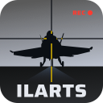
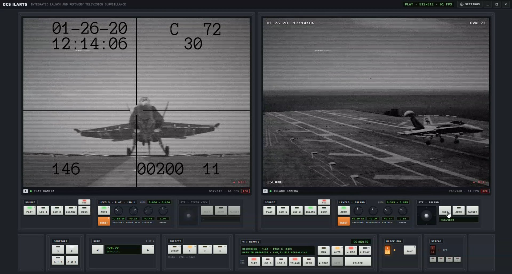
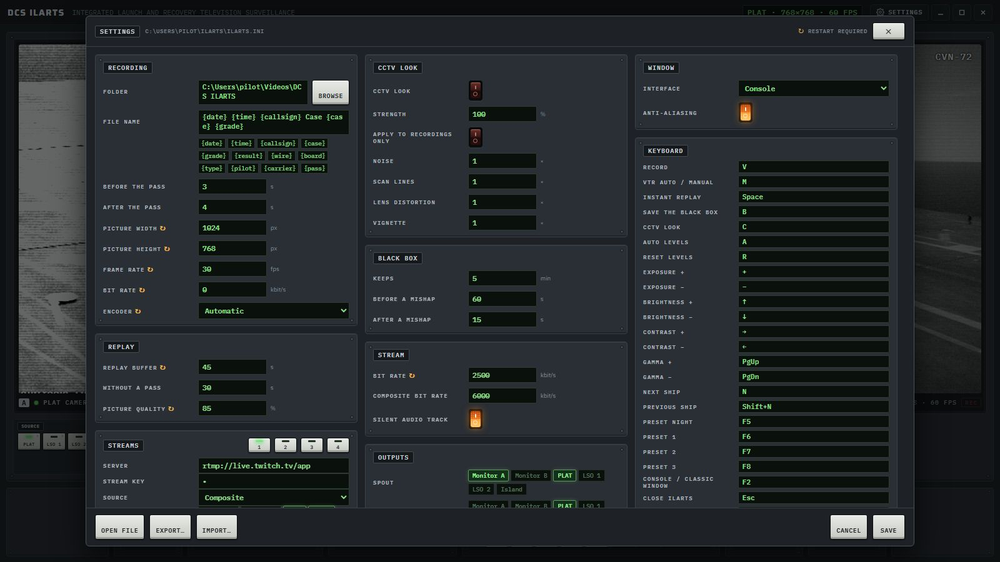

DCS ILARTS User Guide
DCS ILARTS shows the closed-circuit television of a Supercarrier in a window on your desktop. The window operates from all locations in the mission. You do not need to go to the LSO platform.
The window shows these pictures (sources):
| Source | Picture |
|---|---|
| PLAT | The PLAT camera (ILARTS) in the flight deck, with the PLAT symbols. |
| LSO 1 | The LSO station screen. |
| LSO 2 | The LSO cue panel. |
| ISLAND | A camera on the island. In AUTO mode, it follows each landing aircraft from the round down. |
| DECK | The deck cameras: bow bubble, catapult 1, crotch, elevators 1 to 3, corral, waist bubble and junkyard. In the hangar bay: HANGAR FWD and HANGAR AFT at the ends, and HANGAR EL 1 to 4 across from each elevator. The hangar cameras have no AUTO. |
developer.microsoft.com/microsoft-edge/webview2. Install the "Evergreen Bootstrapper".| Mission | Condition |
|---|---|
| Single player | The hook permissions in autoexec.cfg are necessary. REPAIR adds them. |
| Multiplayer, you are the host | The hook permissions in autoexec.cfg are necessary. REPAIR adds them. |
| Multiplayer, you are a client | The server must let clients export objects. DCS sends LSO grades, crash events and ejection events to the host only. Thus, the file names have no grade, and the black box does not save automatically after a crash or an ejection. All other functions operate. |
ILARTS collects no data. It has no telemetry and no account. ILARTS keeps all of its files on your computer: the recordings, the stills, the settings and the log. ILARTS connects to a network only for two things: an RTMP stream that you set up, to the server that you enter, and the check for updates. The check for updates asks the public GitHub API for the newest release once a day. It sends no data about you or your computer. You can set it to off (refer to "Update ILARTS" in section 2).
The log (%LOCALAPPDATA%\ILARTS\ILARTS.log) can show your Windows user name in file paths. It goes to other persons only if you attach it to a problem report.
The ILARTS window uses the Microsoft WebView2 runtime. The runtime follows your Windows diagnostic data settings.
DCS-ILARTS-Setup-<version>.exe.Saved Games\DCS.The setup program adds the hook permissions to autoexec.cfg. It also adds the Start menu items "DCS ILARTS",
"DCS ILARTS - Repair" and "DCS ILARTS - User Guide".
DCS-ILARTS_v<version>.zip in the library folder of your DCS channel.DCS-ILARTS.zip in the mods folder of your DCS profile.Discord.To install without a mod manager, copy the Mods and Scripts folders from the zip into Saved Games\DCS.
Saved Games\DCS\Mods\tech\ILARTS\bin\ILARTS.exe.ILARTS shows this message at each start until the permissions are added. You can also click SETTINGS > REPAIR. If you only join multiplayer servers as a client, the permissions are not necessary. Click CANCEL to stop the message.
REPAIR adds "userhooks" and "server" to the permissions in Saved Games\DCS\Config\autoexec.cfg.
It keeps the permissions of other mods. Before the first change, it saves a copy of the file as autoexec.cfg.ILARTS-backup.
You can also start ILARTS before DCS. The window then shows "NO SIGNAL" until the mission starts.
To stop the automatic start, set SETTINGS > Window > Start with DCS to off.
Then start ILARTS yourself from the Start menu or from ILARTS.exe.
REPAIR replaces the hook, adds the hook permissions and removes the hook of the old name (LSODiagnostic). It installs the camera component again if it is missing. It also shows if your DCS version is compatible.
Once a day ILARTS asks GitHub if there is a newer release. When there is one, the title bar shows a download icon and 1.1.0 AVAILABLE (the new version number).
Before it installs, ILARTS makes sure that the download is the file published with the release. If the check fails, the title bar shows UPDATE FAILED. Point at it to see the reason. Click it and then TRY AGAIN, or download the setup program from the release page.
The other menu items: RELEASE NOTES opens the release page on GitHub. SKIP THIS VERSION hides the update until a newer version is released.
If you installed ILARTS with OMM, OvGME or manually, the menu shows RELEASE PAGE instead of INSTALL. Download the new zip from that page and install it as before.
To stop the check for updates, set SETTINGS > Installation > Check for updates to off, or clear "Check for updates" in the setup program. A new installation keeps your selection.
OMM, OvGME or a manual installation:
REMOVE removes only the lines that ILARTS added to autoexec.cfg. All other lines stay.
The console has the layout of the ILARTS station on the ship. It has monitors, a row of controls under each monitor, and a rack of shared controls.
| # | Component | Function |
|---|---|---|
| 1 | Title bar | Shows the program source and its frame rate. ? opens this guide. SETTINGS opens the settings. Only while there is a benchmark, a lamp shows its state (refer to "Benchmark"). Only when a new version is available, a download icon and <version> AVAILABLE show it (refer to "Update ILARTS" in section 2). Drag the title bar to move the window. |
| 2 | Monitor A | The program monitor. The black box and stream source "Monitor A" use this picture. |
| 3 | Monitor B | A second monitor with its own controls. It shows in layout 2 only. |
| 4 | SOURCE | Selects the picture on the monitor. Refer to section 4. |
| 5 | LEVELS | Adjusts exposure, brightness, contrast and gamma of the picture. |
| 6 | PTZ | Pan, tilt and zoom for a camera. |
| 7 | MONITORS | Selects the layout. Refer to section 5. |
| 8 | SHIP | Selects the carrier. |
| 9 | PRESETS | Loads and saves picture levels. |
| 10 | VTR REMOTE | Recording and replay. |
| 11 | BLACK BOX | Keeps the last minutes of the program picture. |
| 12 | STREAM | Starts and stops the RTMP streams. |
| Key | Layout |
|---|---|
| 1 | One monitor (A). |
| 2 | Monitors A and B side by side. Each monitor has its own controls. |
| 1 + 4 | Monitor A and four small previews. Click a preview to move its picture to monitor A. Click the name under a preview to change its source. |
| A ⇄ B | Moves the picture of monitor A to monitor B, and the picture of monitor B to monitor A. |
The console fills all window shapes. In a small window, the controls become smaller and the pictures stay large. Drag an edge of the window to change its size.
Each monitor has a SOURCE panel, a LEVELS panel and a PTZ panel. These panels operate on the picture of their monitor only.
| Control | Function |
|---|---|
| AUTO | Adjusts the levels automatically to the picture. The display shows the measured range. |
| RESET | Sets all levels to their initial values. |
| EXPOSURE | Makes the picture lighter or darker, in EV steps. |
| BRIGHTNESS | Adds or removes light in all parts of the picture. |
| CONTRAST | Increases or decreases the difference between light and dark areas. |
| GAMMA | Makes the middle tones lighter or darker. |
The PLAT and LSO 1 use the same levels. Each camera has its own levels. LSO 2 has no levels.
The PTZ panel operates on the island camera and on the deck cameras. It is not available for the PLAT and the LSO screens.
| Control | Function |
|---|---|
| Joystick | Drag to pan and tilt. Hold the left mouse button on the joystick to zoom in. Hold the right mouse button to zoom out. Alternatively, turn the mouse wheel. |
| REST | Moves the camera back to its initial view. The camera stays there. |
| AUTO | Moves the camera back to its initial view. Then the camera follows the target that the TARGET selector shows. |
| TARGET | Selects the target for AUTO: the recovery, the nearest catapult, the active catapult, or catapult 1 to 4. |
| FLIR | Experimental. Shows the infrared (FLIR) picture of DCS for this camera. Push again for the normal picture. The key shows only when the setting "FLIR view" is on (section 9). |
With the target "recovery", the camera follows each landing aircraft from the round down. It stops when the aircraft taxis out of the wires. With a catapult target, it follows the aircraft on the catapult through the launch.
The hangar cameras do not follow aircraft. Their PTZ panel has no AUTO and no TARGET: a hangar camera stays where you put it. Rain and snow are never drawn in the hangar.
The rack contains the controls that are shared by all monitors.
Selects the layout: 1, 2 or 1 + 4. A ⇄ B moves the pictures between monitors A and B. Refer to section 3.
Selects the carrier that all monitors show. The display shows the hull number and the ship's name. Click the arrows to go to the next or the previous carrier. Alternatively, push N or Shift+N. Click the name to see the list of carriers.
A preset keeps the levels of all pictures: the PLAT and each camera. NIGHT is a fixed preset. Presets 1 to 3 are yours.
To load a preset, click its key or push F5 to F8. To save, you can also push Ctrl+F6 to F8. The right-click menu also has "Rename" and "Clear".
| Control | Function |
|---|---|
| MAN / AUTO | MAN: you start and stop the recordings. AUTO: ILARTS records each approach automatically. |
| ACFT | Selects the approaches that AUTO records: MY ACFT, MY SECTION, MY FLIGHT or ALL ACFT. The display above the MAN, AUTO and ACFT keys shows the selection. Refer to section 6. |
| ● REC | Starts or stops a recording. |
| ▶ PLAY | Starts the instant replay. |
| ■ STOP | Stops the recording or the replay. |
| SAVE | Saves the replay as video files, one for each monitor. |
| STILL | Saves a picture of each source in REC SRC. Refer to section 6. |
| FOLDER | Opens the folder of the current mission. If the mission has no files yet, it opens the video folder. |
| REC SRC | Shows the sources that each recording records. Click a key to add or remove a source. |
| COMP | Lit: each recording and each still is one composite picture of the sources in REC SRC. Not lit: one file for each source. Refer to section 6. |
The display shows the mode, the time and the replay buffer. The small display shows the number of files in the video folder and their size.
The switch sets the black box on or off. SAVE saves all that the black box keeps. Refer to section 6.
The switch starts all streams that have a server. Each of the four keys under the display starts or stops one stream. A red lamp shows a live stream. A lamp that flashes shows that the stream connects. Refer to section 7.
The display shows the stream status on the first line: OFF, CONNECTING, LIVE or RETRYING. With more than one stream, it also shows the number of live streams, for example LIVE 2/2. The second line shows the bit rate. If a stream is not live, the second line shows the stream number and the cause, for example 2 NO SERVER. Put the pointer on the display to see the full message for each stream.
ILARTS saves the video files in Videos\DCS ILARTS. You can change the folder in the settings.
Each mission gets its own folder in the video folder. The folder name contains the date, the time that the mission started and the mission name.
An example: 2026-11-17 1432 Case I recovery. All recordings, black box files, saved replays and stills of the mission go in this folder.
When you start the mission again, ILARTS makes a new folder. ILARTS makes the folder only when the mission has a file.
The storage limit keeps the video folder below a maximum size. It is off when you install ILARTS.
Before a new recording or still, ILARTS adds the size of all files in the video folder and its subfolders (and in the stills folder, if you set a different one). If the new file makes the total larger than the maximum size, ILARTS deletes its oldest recordings and stills first. Then it removes the mission folders that are empty.
ILARTS starts each recording just before the aircraft comes into the PLAT picture. It stops a few seconds after the trap, the bolter or the wave-off. When aircraft are close together, ILARTS makes one file for each aircraft.
To record only some approaches, push ACFT until the display shows the selection:
| Display | AUTO records the approaches of |
|---|---|
| MY ACFT | Your aircraft. |
| MY SECTION | Your aircraft and the other aircraft of your section: aircraft 1 and 2, or 3 and 4, of your flight. |
| MY FLIGHT | All aircraft of your flight (your group in the mission). |
| ALL ACFT | All aircraft. This is the default. |
When you leave your aircraft, the selection continues to use it until the mission ends. For example, you land, then go to the LSO station or release your slot. ILARTS then records the approaches of your flight.
The file name contains the date, the time, the pilot, the recovery case and the LSO grade.
An example: 2026-11-13 21-04-10 Viper Case III (OK) wire 3 PLAT.mp4. The source name is at the end.
A pass recording is approximately 1 minute and less than 20 MB. You can send it in Discord.
Push COMP next to the REC SRC row. When it is lit, each recording, manual or automatic, is one 1920 × 1080 file that shows all the sources in REC SRC. The sources are arranged as in a composite stream: one source fills the picture, two are side by side, three or four are in a 2 × 2 grid. If more than four sources are in REC SRC, the composite shows the first four in the order of the REC SRC row.
The file name ends with COMPOSITE, for example 2026-11-13 21-04-10 Viper Case III (OK) wire 3 COMPOSITE.mp4.
Push COMP again to go back to one file for each source. A change applies from the next recording.
| Key | Function in the replay |
|---|---|
| Space | Pause or play. |
| ← → | Go back or forward 2 seconds. When paused: one frame. |
| , . | One frame back or forward. |
| ↑ ↓ | Speed: 1/8, 1/4, 1/2, 1, 2, 4 or 8 times. The speed shows on the monitor. |
| Home | Go to the start of the replay. |
| S | Save the replay as video files, one for each monitor. |
| Esc | Go back to the live picture. |
Push STILL or P. ILARTS saves one picture of each source in the REC SRC row, as it records it.
When COMP is lit, ILARTS saves one composite picture of these sources.
The pictures go in the folder Stills in the folder of the mission. You can change the folder in the settings. All stills then go in that folder, without a folder for each mission.
The file name contains the date, the time, the source and the mission clock in DCS (as on the PLAT picture).
An example: ILARTS 2026-11-16 14-03-22 PLAT DCS 09-30-12.png.
The black box keeps the last 5 minutes of the program picture in memory. It is on when ILARTS starts.
ILARTS saves the black box automatically when one of these events occurs within 5 nm of the carrier:
The file contains the 60 seconds before the event and the 15 seconds after it. Its name is "<date time> MISHAP <event> <pilot>.mp4". To save all that the black box keeps at a different time, push SAVE or B.
| Key | Function |
|---|---|
| Ctrl+Shift+F9 | Start or stop a recording. |
| Ctrl+Shift+F10 | Instant replay. |
| Ctrl+Shift+F11 | Save the black box. |
| Ctrl+Shift+F8 | Save a still. |
The CCTV look adds scan lines, noise, lens distortion and dark corners, as on the monitor of a ship. It is on in a new installation. Push C to set it on or off. The setting "Apply to recordings only" keeps the window picture clean and puts the look in the recordings, the black box and the streams only.
These outputs can use these sources: Monitor A, Monitor B, PLAT, LSO 1, LSO 2, Island and Composite. Monitor A and Monitor B send the picture that the monitor shows. Composite puts up to four pictures in one picture (refer to "Set up an RTMP stream" below).
| Output | Use | Condition |
|---|---|---|
| Spout | OBS and other Spout receivers. No delay and no encoding. | Install the "Spout2 Plugin for OBS" in OBS. |
| Virtual cameras | Discord, Teams, Zoom, OBS (as a webcam). | Windows 11. Install the camera component one time. |
| RTMP streams | Twitch, YouTube, MediaMTX, nginx-rtmp. | Plain rtmp:// only. rtmps:// is not available. |
| Window share | Discord screen share. | Share the ILARTS window. |
If you select Composite, select its pictures at Composite in the Outputs panel. The Spout composite is 1920 × 1080.
rtmp://ingest.global-contribute.live-video.net/app for Twitch.To remove a stream, select its key in the STREAMS panel, click CLEAR, click CLEAR again to confirm, then click SAVE.
To start the streams automatically, set SETTINGS > Stream > Start automatically to on. The streams then start when DCS is connected and a source shows a picture. If you stop the streams, they stay off until DCS starts again.
?bandwidthtest=true after the stream key.
Twitch receives the stream but does not show it to viewers. Remove this text before you start a live broadcast.A composite puts up to four pictures in one 1920 × 1080 picture. One picture fills it. Two pictures are side by side. Three or four pictures are in a 2 × 2 grid.
These keys operate when the ILARTS window has the keyboard. To change a key, click SETTINGS, then click the key in the Keyboard panel. Push the new key. Esc cancels the change. Delete removes the key.
| Default key | Function |
|---|---|
| 1 … 5 | Source of monitor A |
| V | Record |
| M | VTR auto / manual |
| Space | Instant replay |
| B | Save the black box |
| P | Still |
| C | CCTV look |
| A | Auto levels |
| R | Reset levels |
| + − | Exposure |
| ↑ ↓ | Brightness |
| → ← | Contrast |
| Default key | Function |
|---|---|
| PgUp PgDn | Gamma |
| N | Next ship |
| Shift+N | Previous ship |
| F5 | Preset Night |
| F6 … F8 | Presets 1 to 3 |
| Ctrl+F6 … F8 | Save presets 1 to 3 |
| Esc | Close ILARTS |
| Ctrl+Shift+F9 | Record (in DCS) |
| Ctrl+Shift+F10 | Instant replay (in DCS) |
| Ctrl+Shift+F11 | Save the black box (in DCS) |
| Ctrl+Shift+F8 | Still (in DCS) |
The level keys operate on the picture of monitor A. The keys with "(in DCS)" also operate when DCS has the keyboard.
Click SETTINGS in the title bar to open the settings. Click SAVE to keep the changes.
ILARTS keeps the settings in the file ILARTS.ini next to ILARTS.exe.

| Panel | Setting | Default | Range | Function |
|---|---|---|---|---|
| Recording | Folder | Videos\DCS ILARTS | Folder for recordings, replays, black box files and stills. Each mission gets a folder in it. | |
| Stills folder | Empty: Stills in the mission folder | Folder for all stills. | ||
| Storage limit | Off | Deletes the oldest recordings and stills to keep the folder below the maximum size. Refer to section 6. | ||
| Maximum size | 50 GB | 1–100000 GB | Maximum size of the video folder and its subfolders. | |
| File name | {date} {time} {callsign} Case {case} {grade} | Name of a pass recording. Click a parameter under the field to add it. | ||
| Before the pass | 3 s | 0–20 s | Time recorded before the aircraft comes into the picture. | |
| After the pass | 4 s | 0–30 s | Time recorded after the trap, bolter or wave-off. | |
| Picture width ↻ | 1024 px | 320–3840 | Size of the recorded picture. | |
| Picture height ↻ | 768 px | 240–2160 | ||
| Frame rate ↻ | 30 fps | 10–60 | Frame rate of recordings and streams. | |
| Bit rate ↻ | 0 (automatic) | 0–100000 kbit/s | Average bit rate of recordings. | |
| Encoder ↻ | Automatic | Automatic, Graphics card or Software. | ||
| Replay | Replay buffer ↻ | 45 s | 10–300 s | Time that the instant replay keeps. |
| Without a pass | 30 s | 5–300 s | Replay length when no pass is in the buffer. | |
| Picture quality ↻ | 85 % | 30–100 % | Quality of the replay buffer. | |
| CCTV look | CCTV look | On | Sets the look on or off (key C). | |
| Strength | 100 % | 0–200 % | Strength of all effects. | |
| Apply to recordings only | Off | The look in recordings, black box and streams only. | ||
| Noise | 1 × | 0–4 | Strength of each effect. 0 removes the effect. | |
| Scan lines | 1 × | 0–4 | ||
| Lens distortion | 1 × | 0–4 | ||
| Vignette | 1 × | 0–4 | ||
| Black box | Keeps | 5 min | 1–30 min | Time that the black box keeps. |
| Before a mishap | 60 s | 5–1800 s | Time saved before a mishap. | |
| After a mishap | 15 s | 0–120 s | Time saved after a mishap. | |
| Streams | Start automatically | Off | Starts the streams when DCS is connected and a source shows a picture. | |
| Bit rate ↻ | 2500 kbit/s | 300–20000 | Bit rate of each stream and of the black box. | |
| Composite bit rate | 6000 kbit/s | 1000–30000 | Bit rate of a composite stream (1920 × 1080). | |
| Silent audio track | On | Adds a silent audio track. Some services refuse video without audio. | ||
| Label | 6 characters | Name on the key of the stream instead of the number, for each stream 1 to 4. | ||
| Server | Address of the RTMP server. | |||
| Stream key | Key from the stream service. | |||
| Source | Monitor A | Monitor A, Monitor B, Composite, PLAT, LSO 1, LSO 2 or Island. | ||
| Composite | Monitor A, Monitor B | 1–4 | The pictures in a composite. | |
| Outputs | Spout | None | Sources sent as Spout senders. | |
| Virtual cameras | None | Sources sent as webcams (Windows 11). | ||
| Composite | Monitor A, Monitor B | 1–4 | The pictures in the Spout and webcam composite. | |
| Camera component | INSTALL or REMOVE the webcam component. Administrator approval is necessary. | |||
| Benchmark | Benchmark next mission | Off | Measures the frame rate cost of ILARTS at the next mission start. The setting goes off when the benchmark starts. Refer to "Benchmark" below. | |
| Last report | OPEN shows the newest benchmark report. | |||
| Reports | OPEN shows the folder with the benchmark reports, %LOCALAPPDATA%\ILARTS\benchmarks. | |||
| Installation | Version | The installed ILARTS version. Give it in a problem report. | ||
| Check for updates | On | Once a day, asks GitHub for a newer version and shows it in the title bar. Refer to section 2. | ||
| Check and repair | REPAIR: refer to section 2. | |||
| DCS permissions | ADD or REMOVE the hook permissions in autoexec.cfg. Refer to section 2. | |||
| Logs | OPEN shows the folder with the log file, ILARTS.log. | |||
| Experimental | FLIR view ⚠ | Off | Shows the FLIR key on the PTZ panel of each camera. Refer to section 4 and the caution below. | |
| Window | Start with DCS | On | Opens ILARTS when a mission starts, if it is not open. | |
| Anti-aliasing | On | Makes the edges in the camera pictures smooth. | ||
| Keyboard | All keys | Refer to section 8. |
| Parameter | Value | Parameter | Value |
|---|---|---|---|
| {date} | Date (YYYY-MM-DD) | {result} | TRAP, BOLTER or WAVE-OFF |
| {time} | Time (HH-MM-SS) | {wire} | Wire caught |
| {callsign} | Callsign, or the pilot | {board} | Board number |
| {case} | Recovery case (I, II, III) | {type} | Aircraft type |
| {grade} | LSO grade and wire, or the result | {pilot} | Pilot |
| {carrier} | Carrier | {pass} | Pass number |
ILARTS.ini in a text editor.ILARTS.ini.bak and restarts.The benchmark measures how much DCS frame rate ILARTS uses on your computer. It operates one time, at the start of the next mission, for approximately 6 minutes. The i next to the name of the Benchmark panel shows these instructions in short form.
Missions\ILARTS Benchmark.miz (installed with ILARTS), a calm, repeatable scene: the cockpit of an F/A-18C parked on the deck of CVN-71. Do not fly.| Benchmark lamp | Meaning | Click |
|---|---|---|
| Off (not shown) | No benchmark. | |
| Steady green | Armed for the next mission. | Opens SETTINGS at the Benchmark panel. |
| Flashing amber | The benchmark operates. The tooltip shows the stage. | Opens SETTINGS at the Benchmark panel. |
| Steady green | Complete. The report is ready. | Opens the report. The lamp goes off. |
| Red | The benchmark stopped. The tooltip shows why. | Opens the report of the stages that were complete, if there is one. The lamp goes off. |
| Stage | What operates |
|---|---|
| 1 Hook only | DCS with the ILARTS hook. All other ILARTS functions are off. |
| 2 PLAT, LSO 1, LSO 2 | ILARTS starts as usual, without cameras. |
| 3–12 1 view to 5 views | The island camera, then deck positions. Each quantity operates two times: with recording off, then with the PLAT and each view recorded. These recordings are not saved. |
Each stage operates for 20 seconds after a short time to become stable. For each stage, the report shows the average frame rate and the 1% and 0.1% lows (99% and 99.9% of the frames are faster). Below each value, the report shows the difference from stage 1, for example −15 fps · +2.3 ms · −13%. A mission does not stay the same, so a difference of a few percent can be noise.
DCS draws each picture that ILARTS shows. The PLAT and LSO screens are exports from DCS. Each island or deck camera makes DCS draw the scene one more time. This is almost all of the cost of ILARTS, on the graphics card and the render thread of DCS. ILARTS itself (the viewer, recording and the black box) uses a few percent of the processor.
Benchmark results from two computers: the benchmark mission (F/A-18C parked on the deck). Average / 1% low.
| Stage | Laptop: RTX 5070 Ti Laptop GPU, Core Ultra 9 275HX, DCS at 2560 × 1600 | Desktop: RTX 5090, Ryzen 7 9800X3D, DCS at 9984 × 1744 |
|---|---|---|
| Hook only | 127 / 109 fps | 104 / 80 fps |
| PLAT, LSO 1, LSO 2 | 101 / 65 fps (−21% average) | 86 / 59 fps (−17% average) |
| 1 view | 82 / 60 fps (−36%) | 80 / 57 fps (−23%) |
| 2 views | 73 / 57 fps (−43%) | 67 / 53 fps (−36%) |
| 3 views | 62 / 49 fps (−52%) | 49 / 40 fps (−52%) |
| 4 views | 52 / 38 fps (−60%) | 43 / 35 fps (−59%) |
| 5 views | 51 / 39 fps (−60%) | 43 / 36 fps (−58%) |
| 5 views, all recorded | 49 / 35 fps (−61%) | 37 / 30 fps (−64%) |
| Problem | Possible cause | Action |
|---|---|---|
| The window does not open when DCS starts. | This is correct. ILARTS starts only when a mission operates. | Load a mission. |
| The window does not open when the mission is loaded. | The hook or its permissions are missing. | Close DCS. Do a REPAIR (section 2). |
| At start, ILARTS shows "DCS ILARTS is not set up yet". | The hook permissions were not added after a zip installation. | Click YES. Then restart DCS. |
| The window shows "DCS version not compatible". | DCS changed in an update. | Install a newer ILARTS version. Alternatively, go back to the compatible DCS version. |
| The window shows NO SIGNAL. | No mission with a carrier operates. | Load a mission with a Supercarrier. |
| As a multiplayer client, the PLAT shows no aircraft. | The server does not let clients export objects. | Ask the server administrator to let clients export objects. |
| The DCS frame rate decreases. | Each camera on a monitor draws the scene again. | Show fewer cameras. Use layout 1. To see the cost of each function, do a benchmark (section 9). |
| A virtual camera does not show in Discord. | The camera component is not installed. | Click SETTINGS > Outputs > INSTALL. |
| ILARTS shows "Reinstall the camera component". | The component is from an older ILARTS version. | Click SETTINGS > Outputs > INSTALL. ILARTS restarts. |
| A stream does not connect. | Incorrect server or key, or rtmps://. | Make sure that the server starts with rtmp://. Make sure that the key is correct. |
| The STREAM display shows CLOSED. | The server stopped the connection. Twitch does this when the stream key is incorrect. | Copy the stream key from the stream service again. |
| The STREAM display shows NO SERVER or NO HOST. | ILARTS cannot find or connect to the server. | Make sure that the server address is correct. Make sure that the computer has an internet connection. |
| DCS or a different mod does not operate correctly after you install ILARTS. | A conflict between ILARTS and a different mod. ILARTS was not tested with other mods. | Disable the other mods one at a time to find the conflict. Send the log file to the mod author. |
| At start, ILARTS shows "can't run on this PC yet" and "needs the Microsoft Edge WebView2 Runtime". | The WebView2 runtime is not installed. | Click YES. Install the "Evergreen Bootstrapper" from the download page. Start ILARTS again. |
| ILARTS shows "The console stopped working" and closes. | The WebView2 runtime stopped. | Start ILARTS again. If the problem continues, click YES and install the runtime again from the download page. |
If the problem continues, make a problem report at github.com/Nubs-dev/DCS-ILARTS/issues.
You can also report it in the #ilarts-issues forum on Discord. Give the ILARTS version (SETTINGS > Installation > Version) and attach the log file: %LOCALAPPDATA%\ILARTS\ILARTS.log. To find it, click SETTINGS > Installation > Logs > OPEN.
The camera component has its own log: %ProgramData%\DCS ILARTS\ILARTSCam.log.
In this section, "your player location" is where you are in DCS: in an aircraft, at the LSO or Air Boss station, and so on. It is not the location of the PLAT or of a camera in ILARTS.
DCS calculates some parts of the picture only for the main viewport (the view on your screen) at your player location. The PLAT and the cameras in ILARTS are separate views. They cannot get these parts from DCS. These items are not problems in your installation.
| Item | What you see | Cause |
|---|---|---|
| Sun shadows | The PLAT and the cameras show no sun shadows, also when you are at the LSO station. For example, the shadow of the island is not on the deck. | DCS calculates sun shadows only for the main viewport. The PLAT of DCS has the same limitation. |
| Light on the deck | When your player location is far from the carrier, the deck in the PLAT and the cameras can look darker or flatter than when it is near the carrier. This is easier to see in overcast weather and in rain. | DCS calculates the reflections and the light from the sky at your player location, and uses them for all views. |
| Clouds and rain far away | When the carrier is more than 200 km from your player location, the clouds and the rain in the PLAT and the cameras can be different from the weather at the carrier. | DCS keeps cloud data only for 200 km around your player location. |
| Rain at medium altitude | In warm weather, when your player location is at approximately 2.5 to 3.5 km, the rain in the PLAT and the cameras is lighter. | DCS changes part of the rain to snow for all views when the air at your player location is near 0 °C. |
| Rain with time acceleration | With time acceleration, the rain streaks in the PLAT and the cameras are longer than in the main viewport. | The cameras use the speed of the carrier in real time. |
| Multiplayer client | File names have no LSO grade. The black box does not save automatically after a crash or an ejection. | DCS sends these events only to the host (section 1). |